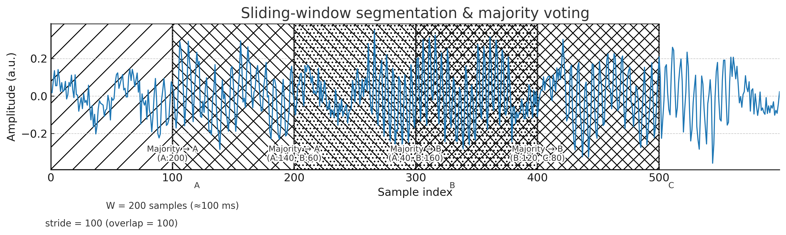
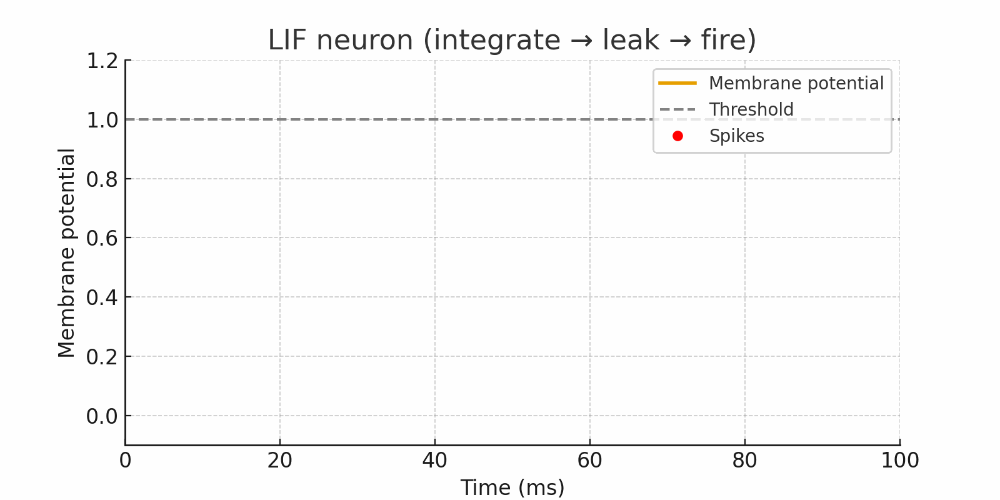

Pipeline: raw sEMG → label refinement → sliding window → spike encoding → model input.
Sliding Window

Window = 200 samples, Overlap = 100 → Step = 100 (next window shifts by half the length).
Spiking Neuron (LIF)

Traditional neural networks are always turned on, while brain-inspired neural networks are activated when required.
The LIF neuron integrates inputs over time, leaks gradually, and fires a spike only when its membrane potential crosses a threshold.
This captures temporal information and creates energy-efficiency.
Spike Encoding
Rate: Sets spike probability proportional to input amplitude, representing information by the average firing rate over a time window. (Robust and intuitive.)
Latency: Stronger signals emit a single spike earlier; the spike timing (latency) itself carries the information. (High temporal precision.)
Delta: Triggers spikes on changes in the input (rises/falls), responding only to change events. (Sparse and energy-efficient.)